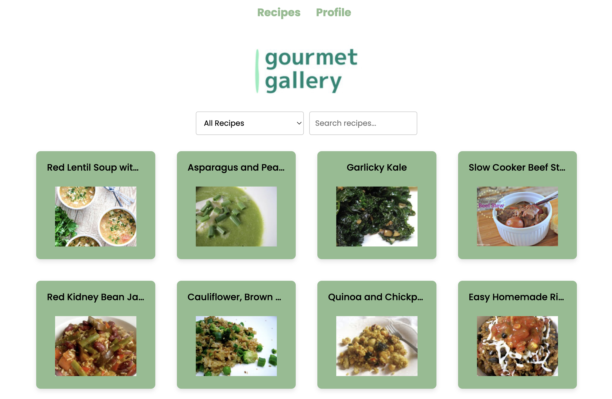

Gourmet Gallery

This solo project was developed using the MERN stack and took approximately 45 hours to complete. It incorporates an external API and authentication system, enabling users to save their favorite recipes.
This project marks my first full-stack endeavor following my course, and I found the challenge immensely rewarding. Unlike previous projects where I had instructor assistance if needed, I relied on my own skills for setup and troubleshooting. I conducted thorough online research to overcome any obstacles encountered along the way.
Check out my site!
Frontend GitHub Link
Backend GitHub Link